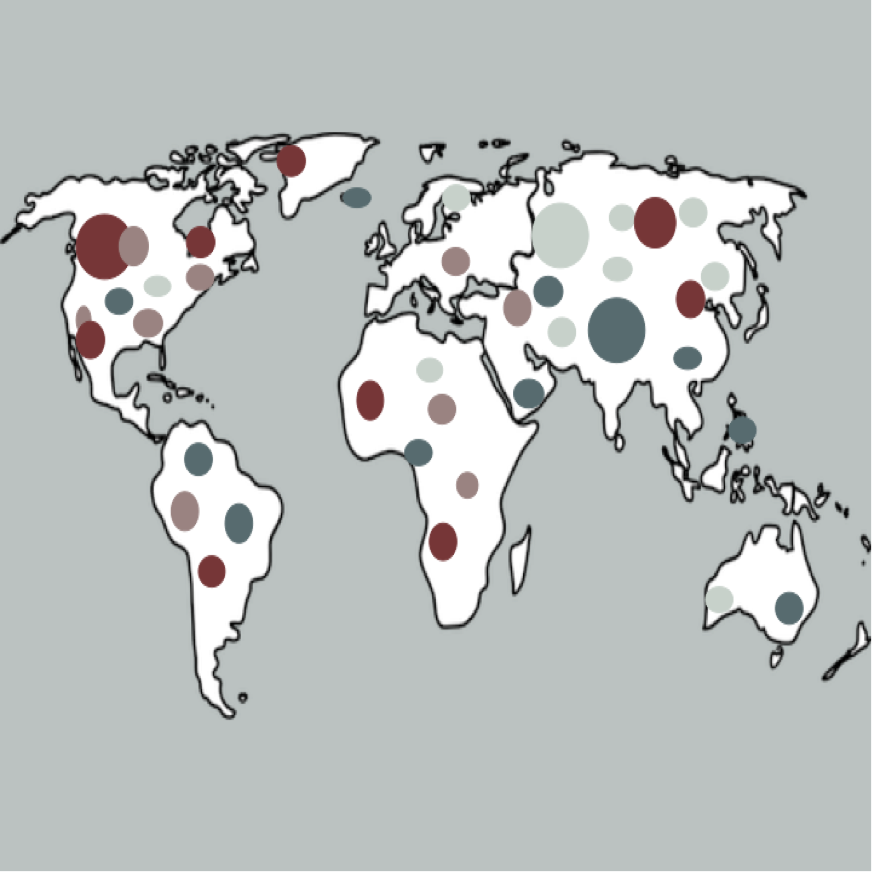

Infectious Disease Genomic Epidemiology

I Introduction
Workshop Info
Class Photo
Schedule
Pre-work
Meet Your Faculty
Compute Setup
II Modules
Module 1: Introduction to Genomic Epidemiology
Lecture
Module 2
Lecture: Phylogenetic Analysis
Module 3: Data Curation and Data Sharing
Lecture
Lab
Module 4: Viral Pathogen Genomic Analysis - Single Nucleotide Variants
Lecture
Lab
Virus Short-Read Genome Assembly and Variant Analysis
Module 5: Bacterial Pathogen Genomic Analysis
Lecture
Lab
Lab Setup
Learning Objectives
Analysis Dataset
Getting Started
cgMLST QC
Locus Quality
Defining Core Genes
Genome Quality
Hamming Distance
Dendrogram Construction
A Simple Tree Vis
Clustering by Distance
Cluster Analysis
Investigating Local Core Genes
Group Exercise
Sponsors
Published with bookdown
Infectious Disease Genomic Epidemiology 2023
Compute Setup
Compute setup
AWS Module